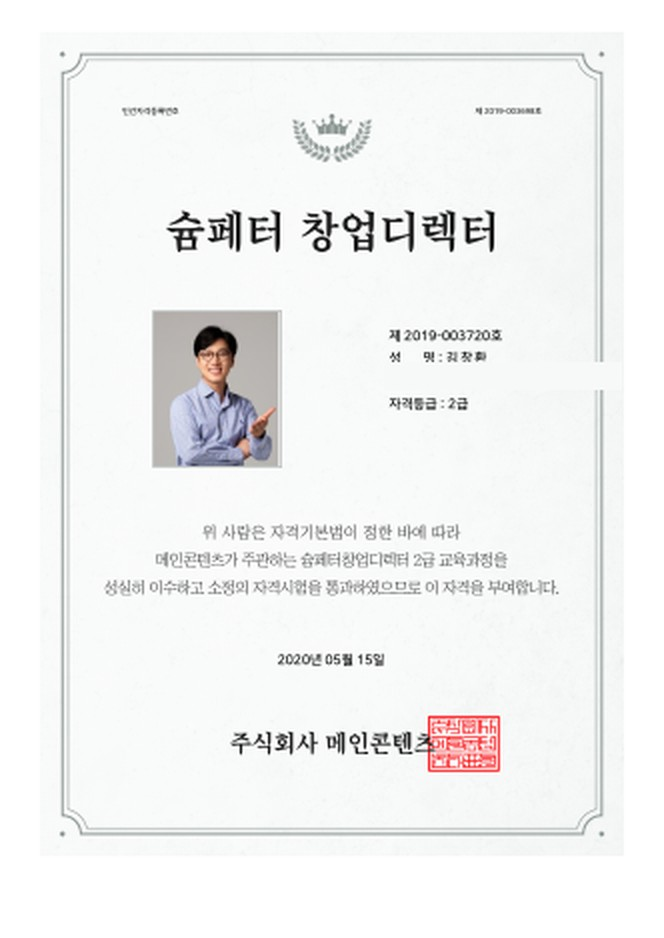
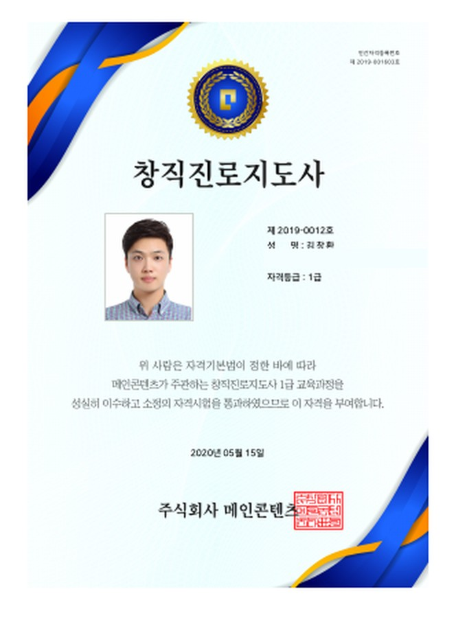
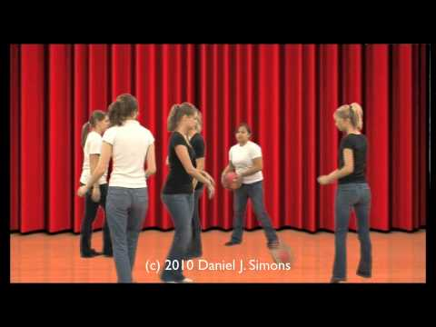
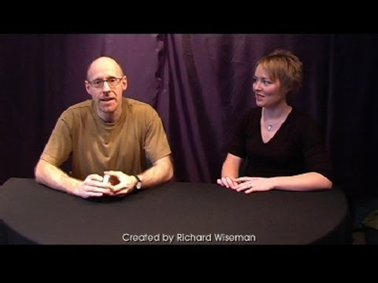
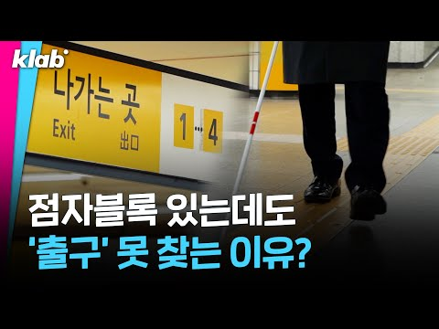
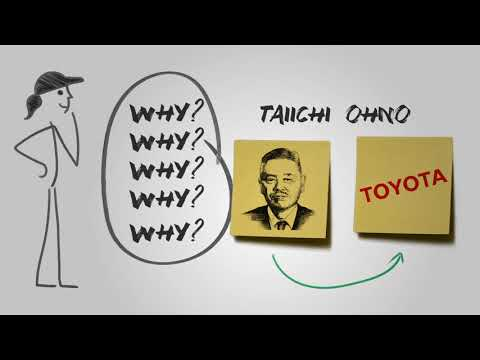
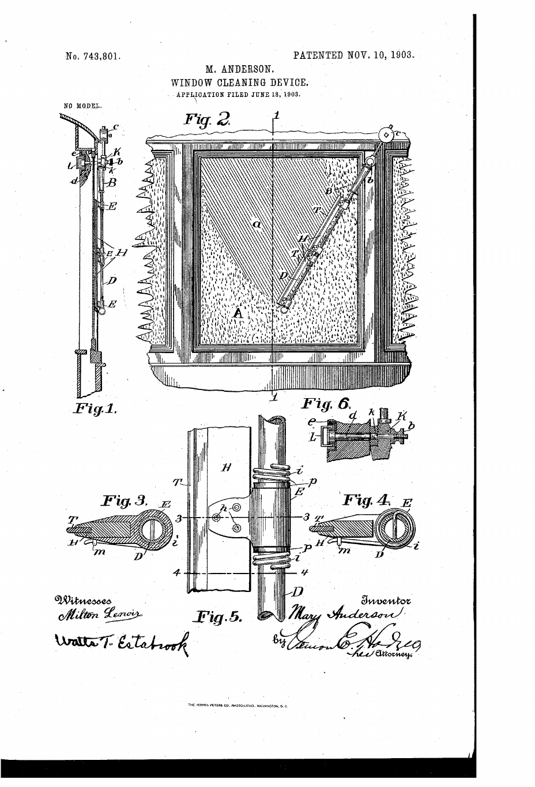
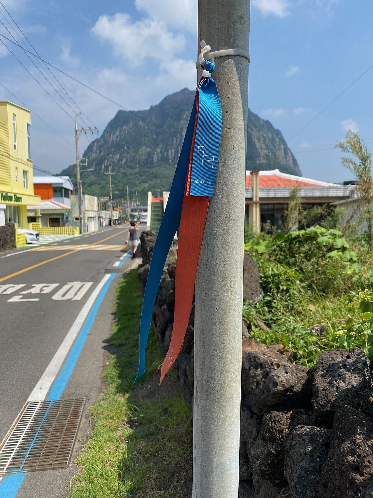

이름표 · 팀 약속 · 80년대 노래 · 세계 브랜드 · 센터 탐정 · 마음카드 · 한 해 돌아보기
강사 김창환교육 비영리단체 네다바웨이 대표국제인증코치(ICF ACC, 2014~2020)더큰내일센터 창립 멤버(기업·청년 인턴십 프로젝트 설계, 참여자 관리지침 수립)군산대학교 2017년 취업률 1위 달성(간호학과, 메디컬 전문분야, 경영, 공과계열)제주특별자치도 공익활동촉진위원회 부위원장(2026~2028)
사진: 송악산 · Lcarrion88, CC BY-SA 4.0
1
시작1교시 · 나와 우리 팀2교시 · 함께 판단3교시 · 마음과 한 해예비
강사 소개 · 오늘 강의와 이어지는 일
강사 김창환은 창업과 기업가정신을 가르쳐 왔습니다
창업 · 창직 자격슘페터 창업디렉터 2급(2020)창직진로지도사 1급(2020)


창업을 가르치는 과정 · 오늘은 이론 대신 이야기와 게임으로
창업 · 기업가정신 강의창업 캠프와 기업가정신 강의 다수 진행청소년 진로 · 기업가정신 학습법 강의이야기 나눔 · 집단지성 · 팀 활동 중심
코칭 · 퍼실리테이션국제인증코치(ICF ACC, 2014~2020)액션러닝 퍼실리테이터 2급(2019)팀이 함께 답을 찾게 돕는 일
현장 경력교육 비영리단체 네다바웨이 대표더큰내일센터 창립 멤버 · 군산대학교 2017년 취업률 1위 달성제주특별자치도 공익활동촉진위원회 부위원장(2026~2028)
책 『일의 본질은 이타성이다』 · 오늘 이야기의 바탕은 "일은 남을 돕는 데서 시작한다"는 생각입니다
2
시작1교시 · 나와 우리 팀2교시 · 함께 판단3교시 · 마음과 한 해예비
출처를 먼저 보여 드립니다
오늘 보여 드리는 영상과 숫자의 출처입니다
보는 연구Simons(2010) 원숭이 영상 실험 · Most 외(2001) 공 실험 · Blake 외(2015) 애플 로고 실험 · Wiseman 카드 영상
브랜드 · 집단지성Interbrand 「Best Global Brands 2026」(2026.10.28) · 로고: Simple Icons(CC0)·위키미디어 공용 · Galton, 『Nature』(1907) · 서로위키 『대중의 지혜』(2004)
신호등위키백과 「신호등」 · 서울시 미디어허브(2023.12 빨간불 남은 시간 신호등)
하루와 한 해를 돌아보기플라톤 『소크라테스의 변론』 38a · 『논어』 학이편 4장(증자) · 세네카 『분노에 관하여』 3권 36장 · Di Stefano·Gino·Pisano·Staats, 하버드경영대학원 워킹페이퍼 「Learning by Thinking」(2014) · 아리스토텔레스 『니코마코스 윤리학』 8권 3장 · Aron 외(1997)
창업은 나에게서Sarasvathy(2001), 「Causation and Effectuation」, 『Academy of Management Review』 26(2)
80년대 노래KBS 가요톱10 1위·10위권 기록(나무위키 「가요톱10/연도」 · 한국학중앙연구원 디지털인문학 위키) · 소리는 Apple Music 공식 미리듣기(30초, 광고 없음)





사진 저작자: 철학자 초상과 「아테네 학당」은 모두 퍼블릭 도메인(위키미디어 공용) · st_cross Aaaatu, CC BY-SA 4.0 · st_signal Sim1992, CC BY-SA 3.0 · st_floor1 Aaaatu, CC BY-SA 4.0 · st_floor2 Aaaatu, CC BY-SA 4.0 · st_ped Yanggyeong, CC BY 4.0 · phones1 Rawpixel Ltd, CC BY 2.0 · phones2 Rawpixel.com, CC0 · phones_team Tomwsulcer, CC0 · phones_walk Ccmsharma2, CC BY-SA 4.0 · phone_photo TurnOnTheNight, CC BY-SA 4.0 · th_delivery Roadgo, CC BY-SA 3.0 · th_ramp Nick-philly, CC BY-SA 4.0 · th_night Marek Ślusarczyk (Tupungato) Photo portfolio, CC BY 3.0 · flip1 Birkenkrahe, CC BY-SA 4.0 · flip2 Birkenkrahe, CC BY-SA 4.0 · dosirak Christophe95, CC BY-SA 4.0 · dosirak2 Korea.net / Korean Culture and Information Service (Jeon Han, CC BY-SA 2.0 · fuse TheresNothingOutThere, CC BY 4.0 · presenter U.S. Army Reserve photo by Sgt. 1st Class Christopher Hernan, Public domain · beach Ocean Blue Project, CC BY-SA 4.0 · care Matt @ PEK, CC BY-SA 2.0 · garlic Fumikas Sagisavas, CC0
영상은 모두 방송사·연구자 공식 채널에서 가져왔습니다.
3
시작1교시 · 나와 우리 팀2교시 · 함께 판단3교시 · 마음과 한 해예비
오늘의 규칙
게임에서 이긴 팀이 간식을 먼저 고릅니다
5개 팀6명 팀 3개, 5명 팀 2개로 앉습니다
점수는 화이트보드에게임이 끝날 때마다 강사가 앞쪽 화이트보드에 팀 점수를 적습니다
오늘 쓰는 것A4 용지 · 포스트잇 · 볼펜 · 매직 · 내 휴대폰
점수는 앞쪽 화이트보드에 적습니다
사진: Tomwsulcer, CC0
4
시작1교시 · 나와 우리 팀2교시 · 함께 판단3교시 · 마음과 한 해예비

오늘 할 일 · 40분씩 세 번 · 쉬는 시간 10분씩 두 번
오늘은 세 번 나누어 수업합니다
1나와 우리 팀A4 이름표 · 팀 공통점 · 팀 이름 · 팀 약속 3가지 · 80년대 노래 · 신호등 퀴즈09:30~10:10
2함께 판단하고 직접 알아보기세계 50대 브랜드 맞히기 · 골턴의 황소 · 오름센터 탐정10:20~11:00
3마음과 한 해마음카드 · 사진과 카카오톡으로 한 해 돌아보기 · 내년의 나에게11:10~11:50
사진: 제주 올레길 리본 표시 · Sgroey, CC BY-SA 4.0
5
시작1교시 · 나와 우리 팀2교시 · 함께 판단3교시 · 마음과 한 해예비
이름표 만들기 · 4분 · A4 한 장
A4 한 장으로 내 이름표를 만듭니다
1A4를 길게 세 번 접어 세모 기둥을 만듭니다
2앞면 가운데에 매직으로 내 이름을 크게 씁니다
3이름 아래에 "올해의 나"를 한 단어로 씁니다 예) 성실 · 손주 · 텃밭 · 건강
4이름표를 내 앞 책상에 세워 둡니다
6
시작1교시 · 나와 우리 팀2교시 · 함께 판단3교시 · 마음과 한 해예비
이름표 만들기
04:00
A4를 세 번 접고 → 이름을 크게 → 아래에 올해의 나 한 단어
7
시작1교시 · 나와 우리 팀2교시 · 함께 판단3교시 · 마음과 한 해예비
팀 만들기 ① · 공통점 찾기 · 6분
질문해서 우리 팀의 공통점 다섯 개를 찾습니다
이렇게 합니다① 돌아가며 서로 질문합니다② 팀원 모두가 "나도!" 하면 공통점입니다③ A4에 공통점 다섯 개를 씁니다
이것은 빼고 씁니다✕ 태어날 때부터 가진 것 사람이다 · 눈이 두 개다 · 한국 사람이다✕ 겉으로 보이는 것 안경을 썼다 · 검은 옷을 입었다○ 질문해서 처음 알게 된 것만 씁니다
8
시작1교시 · 나와 우리 팀2교시 · 함께 판단3교시 · 마음과 한 해예비
팀 만들기 ① · 이렇게 물어보세요
이 질문으로 서로 물어봅니다
고향은 어디세요?
아침에 몇 시에 일어나세요?
가장 좋아하는 음식은 뭐예요?
쉬는 날에는 무엇을 하세요?
형제는 몇 명이에요?
처음 돈을 번 일은 뭐였어요?
노래방에서 부르는 노래는요?
올해 처음 해 본 일은요?
9
시작1교시 · 나와 우리 팀2교시 · 함께 판단3교시 · 마음과 한 해예비
팀 만들기 ① · 공통점 다섯 개
06:00
질문해서 처음 알게 된 공통점만 A4에 씁니다
10
시작1교시 · 나와 우리 팀2교시 · 함께 판단3교시 · 마음과 한 해예비
팀 만들기 ② · 팀 이름 · 2분
공통점 하나로 우리 팀 이름을 정합니다
1찾은 공통점 다섯 개 가운데 하나를 고릅니다
2그 공통점으로 팀 이름을 짓습니다 예) 새벽 다섯 시 팀 · 고사리 팀 · 대정 토박이 팀
3A4 맨 위에 매직으로 팀 이름을 크게 씁니다
11
시작1교시 · 나와 우리 팀2교시 · 함께 판단3교시 · 마음과 한 해예비
팀 만들기 ③ · 팀 약속 3가지 · 6분
팀에서 이야기할 때 꼭 지킬 약속 3가지를 정합니다
✕ 서로 존중한다 → 무엇을 하라는 것인지 알 수 없습니다
○ 언제, 누가, 무엇을 하는지 행동으로 씁니다
한 사람이 말할 때는 끝날 때까지 끼어들지 않는다
팀원이 말을 마치면 "그렇군요" 한마디를 돌려준다
한 번도 말하지 않은 사람에게 먼저 물어본다
다른 의견은 "제 생각은요"로 시작한다
휴대폰은 팀 활동 중에 뒤집어 둔다
정할 때는 모두에게 한 번씩 물어본 뒤 정한다
12
시작1교시 · 나와 우리 팀2교시 · 함께 판단3교시 · 마음과 한 해예비
팀 만들기 ③ · 팀 약속 3가지
06:00
A4에 팀 이름 · 공통점 다섯 개 · 약속 3가지를 씁니다
13
시작1교시 · 나와 우리 팀2교시 · 함께 판단3교시 · 마음과 한 해예비
팀 만들기 · 발표 · 팀마다 40초
팀마다 팀 이름과 약속 3가지를 읽어 주세요
발표가 끝나면 A4를 팀 책상 가운데에 세워 둡니다. 오늘 팀 활동은 이 약속대로 합니다.
원숭이 영상 실험(The Monkey Business Illusion)Daniel Simons 공식 채널 · 1분 42초 · 영어 · 화면만 봐도 됩니다영상이 끝나면 창을 닫고 이 화면으로 돌아옵니다
예비 · 시간이 남으면
66
시작1교시 · 나와 우리 팀2교시 · 함께 판단3교시 · 마음과 한 해예비
영상이 끝났습니다
정답은 16번 · 그런데 바뀐 것이 세 가지 있었습니다
1. 고릴라고릴라 옷을 입은 사람이 지나갔습니다. 아는 분은 기다렸다가 보셨을 겁니다.
처음나중
2. 커튼 색빨간 커튼이 천천히 금색으로 바뀌었습니다.
검은 옷 3명검은 옷 2명
3. 사라진 사람검은 옷 팀 한 명이 화면 밖으로 나갔습니다.
고릴라를 기다린 사람도 나머지 두 가지는 대부분 놓쳤습니다. 아는 것 하나를 찾느라, 새로 바뀐 것을 못 봅니다.
처음 사진: 원본 영상 장면 · 나중 사진: 설명용 재현 이미지(AI 생성 · Higgsfield) · Simons(2010), 「Monkeying around with the gorillas in our midst」, 『i-Perception』 1권 · 고릴라 영상을 알던 사람 중 커튼이나 선수 변화를 알아챈 비율 17%
예비 · 시간이 남으면
67
시작1교시 · 나와 우리 팀2교시 · 함께 판단3교시 · 마음과 한 해예비
게임 · 80년대 노래 2라운드 · 9곡
노래를 맞히고, 그때 내가 어디에 있었는지 이야기합니다
정답 뒤 30초노래를 맞힌 팀에서 한 사람이 "이 노래 나올 때 나는 몇 살이었고, 어디서 무엇을 했는지" 30초 이야기합니다. 이야기까지 하면 1점 더.


 ② 소화기
② 소화기